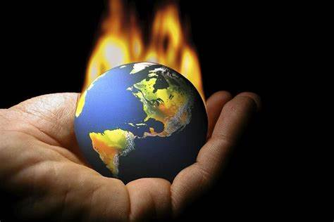

Efeito Estufa
(Resumo)
Efeito Estufa
"O efeito estufa é um fenômeno natural de extrema importância para a existência de vida na Terra.
É responsável por manter as temperaturas médias globais, evitando que haja grande amplitude térmica e possibilitando o desenvolvimento dos seres vivos. Esse fenômeno, no entanto, tem sido agravado pela ação antrópica, que tem elevado as emissões de gases de efeito estufa à atmosfera, provocando alterações climáticas em todo o planeta."
O Que é?
"O efeito estufa é um fenômeno natural causado pela concentração de gases na atmosfera. Esses gases formam uma camada que permite a entrada dos raios solares e a retenção do calor na Terra. Esse processo é essencial para manter a temperatura adequada no planeta, garantindo a sobrevivência dos seres vivos."
Como ocorre o efeito estufa?
Quando os raios solares atingem a superfície terrestre, devido à camada de gases de efeito estufa, em torno de 50% deles ficam retidos na atmosfera. A outra parte, atinge a superfície terrestre, aquecendo-a e irradiando calor. Os gases de efeito estufa podem ser comparados a isolantes, pois absorvem parte da energia irradiada pela Terra. O que acontece é que nas últimas décadas a liberação de gases de efeito estufa, em virtude de atividades humanas, aumentou consideravelmente.

Com esse acúmulo de gases, mais quantidade de calor está sendo retida na atmosfera, resultando no aumento de temperatura. Essa situação dá origem ao aquecimento global. Para termos uma ideia, o efeito estufa pode ser comparado ao que ocorre no interior de um veículo estacionado, com os vidros fechados e recebendo diretamente a luz solar. Apesar do vidro permitir a passagem da luz solar, ele impede a saída do calor, aumentando a temperatura em seu interior.
Quais as causas do efeito estufa?
O efeito estufa é um fenômeno natural, mas é intensificado devido à crescente queima dos combustíveis fósseis que representam a base da industrialização e de muitas atividades humanas. As queimadas nas florestas para transformar suas áreas em plantação, criação de gado e pastagens, também colaboram para o aumento do efeito estufa.
Gases de Efeito Estufa
Os principais gases de efeito estufa são:
- Vapor de água (H2O): encontrado em suspensão na atmosfera.
- Monóxido de Carbono (CO): gás incolor, inflamável, inodoro, tóxico, produzido pela queima em condições de pouco oxigênio e pela alta temperatura do carvão ou outros materiais ricos em carbono, como os derivados do petróleo.
- Dióxido de Carbono (CO2): expelido pela queima de combustíveis utilizados em veículos automotores à base de petróleo e gás, da queima de carvão mineral nas indústrias, e da queima das florestas.
- Clorofluorcarbonos (CFC): composto formado por carbono, cloro e flúor, proveniente dos aerossóis e do sistema de refrigeração.
- Óxido de Nitrogênio (NxOx): conjunto de compostos formados pela combinação de oxigênio com o nitrogênio. É usado em motores de combustão interna, fornos, estufas, caldeiras, incineradores, pela indústria química e pela indústria de explosivos.
- Dióxido de Enxofre (SO2): é um gás denso, incolor, não inflamável, altamente tóxico, formado por oxigênio e enxofre. É usado na indústria, principalmente na produção de ácido sulfúrico e também é expelido pelos vulcões.
- Metano(CH4): gás incolor, inodoro e se inalado é tóxico. É expelido pelo gado, ou seja, na digestão dos animais herbívoros, decomposição de lixo orgânico, extração de combustíveis, dentre outros.
Qual a relação do efeito estufa com o aquecimento global?
A consequência da intensificação do efeito estufa na atmosfera é o aquecimento global. Segundo pesquisas científicas, a temperatura média da Terra, nos últimos cem anos, sofreu uma elevação de cerca 0,5 ºC. Se a atual taxa de poluição atmosférica seguir na mesma proporção, estima-se que entre os anos de 2025 e 2050, a temperatura apresentará um aumento de 2,5 a 5 ºC.
No Brasil, o Centro-Oeste responde por 21% das emissões brutas nacionais, na sequência da região Norte, sendo o desmatamento nos biomas Amazônia e Pantanal em Mato Grosso o vetor das emissões. É seguido pela região Nordeste (8%), onde as emissões se concentram na Amazônia do Maranhão e no Matopiba – que compreende os Estados Maranhão, Tocantins, Piauí e Bahia -; pelo Sudeste (5%), que tem Minas Gerais como maior emissor; e Sul (6%), com emissões mais localizadas a oeste do Rio Grande do Sul. Se consideradas as emissões líquidas, o Centro-Oeste supera o Norte em 27 milhões de toneladas emitidas, e responde por 49% das emissões líquidas no país.

As consequências do efeito estufa serão as seguintes:
- Derretimento de grandes massas de gelo das regiões polares, ocasionando o aumento do nível do mar. Isso poderá levar a submersão de cidades litorâneas, forçando a migração de pessoas.
- Aumento de casos de desastres naturais como inundações, tempestades e furacões.
- Extinção de espécies.
- Desertificação de áreas naturais.
- Episódios mais frequentes de secas.
- As mudanças climáticas podem ainda afetar a produção de alimentos, pois muitas áreas produtivas podem ser afetadas.
- Outro problema associado à presença de gases poluentes na atmosfera é a chuva ácida. Ela resulta da quantidade exagerada de produtos da queima de combustíveis fósseis liberados na atmosfera, em consequência das atividades humanas.
Como evitar o aumento do efeito estufa
Para alertar sobre a situação do efeito estufa e do aquecimento global, diversos países, entre eles o Brasil, assinaram o Protocolo de Kyoto, em 1997. Antes disso, foi assinado em 1987 o Protocolo de Montreal. O intuito principal é a redução da emissão de produtos que causam danos à camada de ozônio.

Algumas dicas de ações individuais e coletivas também contribuem para redução do efeito estufa, são elas:
- Realizar pequenos trajetos a pé ou de bicicleta;
- Dar preferência ao transporte coletivo;
- Utilizar produtos recicláveis;
- Economizar energia elétrica;
- Realizar coleta seletiva;
- Reduzir o consumo de carne bovina e suína;
- Fazer compostagem do material orgânico.